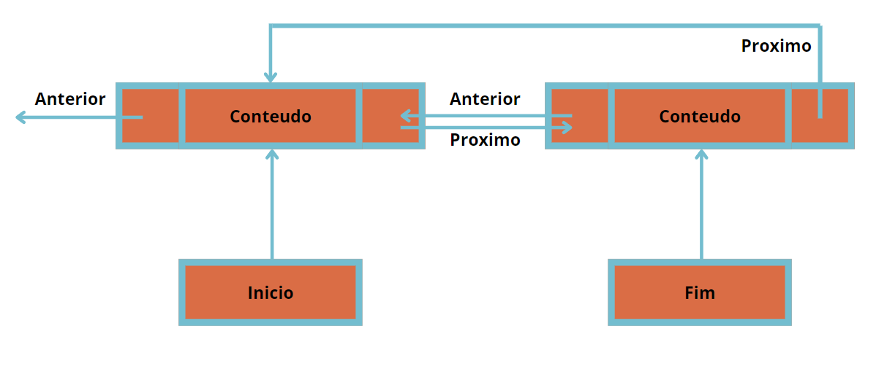
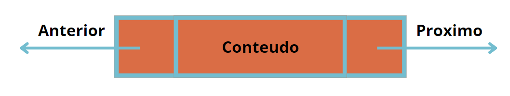
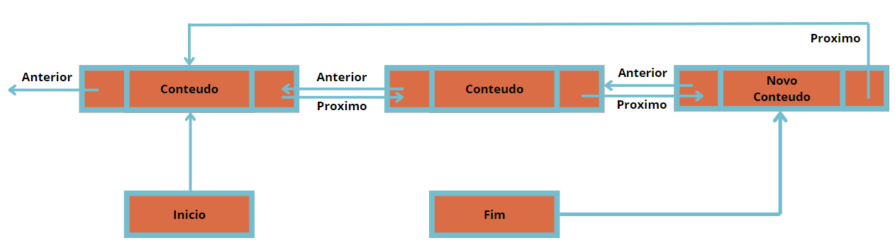
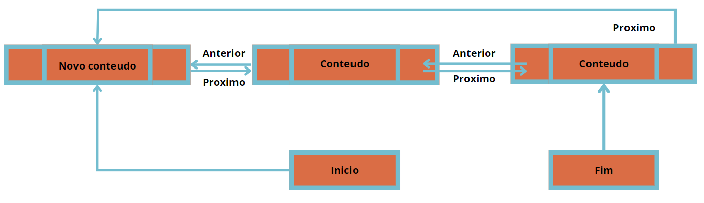
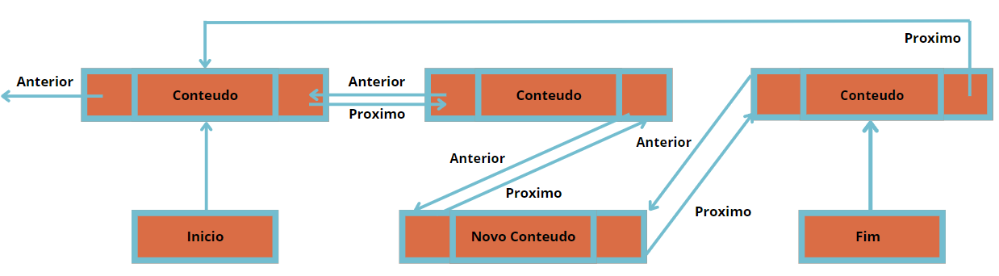

Listas Duplamente Encadeadas
O que é uma Lista Duplamente Encadeada?
Imagine que você tem uma fila de amigos, mas desta vez, cada amigo está segurando a mão do amigo à sua frente e também do amigo atrás dele. Esta é uma maneira fácil de pensar em uma lista duplamente encadeada. Cada amigo é um "nó" na lista, e as mãos que eles estão segurando são as "ligações" para o próximo e o anterior nó.
As listas duplamente encadeadas são importantes na programação porque oferecem mais flexibilidade do que as listas simplesmente encadeadas. Elas permitem que você navegue tanto para frente quanto para trás na lista, facilitando a inserção e remoção de elementos em qualquer posição. Elas são usadas em diversas aplicações, como na implementação de navegadores (para manter o histórico de navegação), em sistemas de gerenciamento de memória, e em muitas outras situações onde o acesso bidirecional é necessário.
Como Funciona?
Vamos ver como essa fila de amigos funciona e como você pode brincar com ela. Vamos explorar algumas operações básicas que você pode realizar em uma lista duplamente encadeada.
Celula de lista Dupla
Essa é uma celula de exemplo de Lista duplamente encadeada
Adicionando um Amigo ao Final
Quando você quer adicionar um novo amigo ao final da fila, você pede ao último amigo que segure a mão do novo amigo. O novo amigo então segura a mão do último amigo e agora eles são amigos!
1. using System;
2. using System.Collections.Generic;
3. public class No {
4. // Declaração do campo público Valor para armazenar o valor do nó.
5. public int Valor;
6. // Declaração do campo público Proximo para referenciar o próximo nó na lista.
7. public No Proximo;
8. // Declaração do campo público Anterior para referenciar o nó anterior na lista.
9. public No Anterior;
10. public No(int valor) {
11. // Inicializa o campo Valor com o valor passado como parâmetro no construtor.
12. Valor = valor;
13. // Inicializa o campo Proximo como nulo, indicando que inicialmente não há próximo nó.
14. Proximo = null;
15. // Inicializa o campo Anterior como nulo, indicando que inicialmente não há nó anterior.
16. Anterior = null;
17. }
18. }
19. public class ListaDuplamenteEncadeada {
20. // Declaração do campo privado primeiro para armazenar o primeiro nó da lista.
21. private No primeiro;
22. // Declaração do campo privado ultimo para armazenar o último nó da lista.
23. private No ultimo;
24. public ListaDuplamenteEncadeada() {
25. // Inicializa o campo primeiro como nulo, indicando que a lista está vazia inicialmente.
26. primeiro = null;
27. // Inicializa o campo ultimo como nulo, indicando que a lista está vazia inicialmente.
28. ultimo = null;
29. }
30. // No trecho abaixo, estamos adicionando um novo nó ao final da lista duplamente encadeada.
31. // Se a lista estiver vazia (primeiro == null), o novo nó se torna o primeiro e o último nó da lista.
32. // Caso contrário, o novo nó é adicionado após o último nó existente.
33. public void AdicionarAmigoAoFinal(int valor) {
34. No novoNo = new No(valor); // Cria um novo nó com o valor fornecido.
35.
36. if (primeiro == null) {
37. // Se a lista está vazia, define o novo nó como o primeiro e último nó da lista.
38. primeiro = novoNo;
39. ultimo = novoNo;
40. } else {
41. // Se a lista já contém elementos, adiciona o novo nó após o último nó existente.
42. ultimo.Proximo = novoNo; // O próximo do último nó existente aponta para o novo nó.
43. novoNo.Anterior = ultimo; // O anterior do novo nó aponta para o último nó existente.
44. ultimo = novoNo; // Atualiza o último nó para ser o novo nó adicionado.
45. }
46. }
47. }
Explicações
o proximo do ultimo conteudo recebe o novo conteudo o "fim" recebe o novo conteudo e o proximo do novo conteudo recebe o primeiro conteudo
Adicionando um Amigo ao Início
Quando você quer adicionar um novo amigo ao início da fila, o novo amigo segura a mão do primeiro amigo, e agora ele é o primeiro da fila!
1. using System;
2. using System.Collections.Generic;
3. public class ListaDuplamenteEncadeada {
4. // Declaração do campo privado primeiro para armazenar o primeiro nó da lista.
5. private No primeiro;
6. // Declaração do campo privado ultimo para armazenar o último nó da lista.
7. private No ultimo;
8. public ListaDuplamenteEncadeada() {
9. // Inicializa o campo primeiro como nulo, indicando que a lista está vazia inicialmente.
10. primeiro = null;
11. // Inicializa o campo ultimo como nulo, indicando que a lista está vazia inicialmente.
12. ultimo = null;
13. }
14. // No trecho abaixo, estamos adicionando um novo nó ao início da lista duplamente encadeada.
15. // Se a lista estiver vazia (primeiro == null), o novo nó se torna o primeiro e o último nó da lista.
16. // Caso contrário, o novo nó é adicionado antes do primeiro nó existente.
17. public void AdicionarAmigoAoInicio(int valor) {
18. No novoNo = new No(valor); // Cria um novo nó com o valor fornecido.
19.
20. if (primeiro == null) {
21. // Se a lista está vazia, define o novo nó como o primeiro e último nó da lista.
22. primeiro = novoNo;
23. ultimo = novoNo;
24. } else {
25. // Se a lista já contém elementos, adiciona o novo nó antes do primeiro nó existente.
26. novoNo.Proximo = primeiro; // O próximo do novo nó aponta para o atual primeiro nó.
27. primeiro.Anterior = novoNo; // O anterior do atual primeiro nó aponta para o novo nó.
28. primeiro = novoNo; // Atualiza o primeiro nó para ser o novo nó adicionado.
29. }
30. }
31. }
Explicações
o anterior do primeiro recebe o novo conteudo o "inicio" recebe o novo conteudo e o proximo dele recebe o antigo "inicio" o proximo do ultimo aponta para o novo conteudo
Adicionando um Amigo no Meio
Quando você quer adicionar um novo amigo no meio da fila, você pede ao amigo que está no meio para segurar a mão do novo amigo, e o novo amigo segura a mão do próximo amigo. Agora, ele está no meio da fila!
1. using System;
2. using System.Collections.Generic;
3. public class ListaDuplamenteEncadeada {
4. // Declaração do campo privado primeiro para armazenar o primeiro nó da lista.
5. private No primeiro;
6. // Declaração do campo privado ultimo para armazenar o último nó da lista.
7. private No ultimo;
8. public ListaDuplamenteEncadeada() {
9. // Inicializa o campo primeiro como nulo, indicando que a lista está vazia inicialmente.
10. primeiro = null;
11. // Inicializa o campo ultimo como nulo, indicando que a lista está vazia inicialmente.
12. ultimo = null;
13. }
14. // No trecho abaixo, estamos adicionando um novo nó ao meio da lista duplamente encadeada.
15. // Se a posição for 0, o novo nó é adicionado no início da lista.
16. // Caso contrário, o novo nó é adicionado após o nó na posição especificada.
17. public void AdicionarAmigoNoMeio(int valor, int posicao) {
18. No novoNo = new No(valor); // Cria um novo nó com o valor fornecido.
19.
20. if (posicao == 0) {
21. AdicionarAmigoAoInicio(valor); // Adiciona o novo nó no início da lista.
22. } else {
23. No atual = primeiro;
24. for (int i = 0; i < posicao - 1 && atual != null; i++) {
25. atual = atual.Proximo;
26. }
27. if (atual != null && atual.Proximo != null) {
28. // Insere o novo nó entre o nó atual e o próximo nó na posição especificada.
29. novoNo.Proximo = atual.Proximo;
30. novoNo.Anterior = atual;
31. atual.Proximo.Anterior = novoNo;
32. atual.Proximo = novoNo;
33. } else if (atual == ultimo) {
34. AdicionarAmigoAoFinal(valor); // Adiciona o novo nó no final da lista.
35. } else {
36. throw new ArgumentOutOfRangeException("Posição inválida!"); // Lança exceção se a posição for inválida.
37. }
38. }
39. }
40. }
Explicações
escolhe aonde irá ficar o novo conteudo , o proximo do conteudo anterior apontara para o novo conteudo o conteudo antecessor apontara o proximo para o novo
Brincando com a Fila
Se você quiser saber quem é o primeiro amigo na fila, você simplesmente pergunta ao amigo que está na frente. E se quiser saber quem vem depois, ou antes, é só perguntar a cada amigo quem eles estão segurando a mão.
1. using System;
2. using System.Collections.Generic;
3. public class ListaDuplamenteEncadeada {
4. // Declaração do campo privado primeiro para armazenar o primeiro nó da lista.
5. private No primeiro;
6. // Declaração do campo privado ultimo para armazenar o último nó da lista.
7. private No ultimo;
8. public No VerPrimeiroAmigo() {
9. // Retorna o primeiro nó da lista duplamente encadeada.
10. return primeiro;
11. }
12. public No VerUltimoAmigo() {
13. // Retorna o último nó da lista duplamente encadeada.
14. return ultimo;
15. }
16. public No VerProximoAmigo(No atualAmigo) {
17. // Retorna o próximo nó após o nó atual na lista duplamente encadeada, se existir.
18. return atualAmigo?.Proximo;
19. }
20. public No VerAmigoAnterior(No atualAmigo) {
21. // Retorna o nó anterior ao nó atual na lista duplamente encadeada, se existir.
22. return atualAmigo?.Anterior;
23. }
24. }